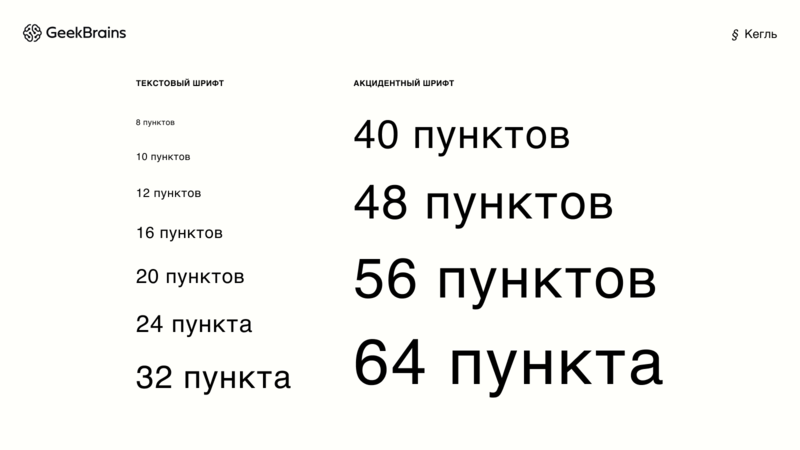

С тех пор как дизайн стал профессией, типографика является одним из основных предметов в
этой области. По
сути, определением типографики является искусство доносить смысл до читателя или пользователя посредством
визуального оформления наборного текста. Грамотная работа с текстом — база и залог успеха любого
дизайнерского решения.
Типографика — это еще и наука, изучению которой специалисты посвящают всю жизнь. Типографика в дизайне
развивается и изменяется, вызывает споры и заставляет думать о прекрасном. Шрифт больше не должен быть
незаметным — сегодня он может быть любым: забавным, витиеватым, неаккуратным, дерзким, нелогичным, а в
лучших образцах — изящным.
Типографика включает сотни терминов и принципов, но сегодня мы разберем
ее основы. Чтобы было легче их запомнить, рекомендуем добавить статью в закладки, а также записать самое
важное и разместить конспект на видном месте.
Анатомия шрифта
Шрифт состоит из букв, и это не просто линии и круги, соединенные в знакомые формы. Каждая
буква
индивидуальна и формируется из множества элементов со своими названиями. Как и у людей, у букв есть
характер, настроение и даже анатомические детали.
Для более ясного понимания, что такое типографика текста в графическом дизайне, мы собрали важные понятия
в одной картинке — для наглядности и удобства. Время достать ручку и начать записывать!
Символы — это отдельные буквы, знаки пунктуации, цифры и прочие элементы, которые используются в типографском наборе.
Строчные буквы — это буквы обычной величины, используются для написания во всех случаях, кроме тех, когда по правилам орфографии и пунктуации требуется употребление прописной буквы.
Прописные буквы — это заглавные буквы, отличающиеся от строчных размером, а иногда и начертанием. С прописной буквы пишется первое слово в тексте и цитате.
Линия шрифта — воображаемая линия, проходящая по нижнему краю строчных символов без учета нижних выносных элементов.
Верхняя линия — воображаемая линия, проходящая по верхнему краю строчных символов без учета верхних выносных элементов.
Верхний выносной элемент — элемент строчных букв, выходящий за верхнюю линию (например, в буквах б и в).
Нижний выносной элемент — элемент строчных букв, опущенный ниже линии шрифта (например, в буквах у и ф).
Засечка (сериф) — короткий, обычно перпендикулярный штрих на конце буквы, с которого начинается и которым заканчивается основной штрих знака. У рубленых шрифтов засечки отсутствуют, отсюда и их название «sans serif» («без засечек»).
Понятие шрифта и его характеристики
Вы наверняка слышали, что человек воспринимает чуть ли не 90% информации глазами, то есть зрительным путем. Точную цифру привести сложно, но ясно, что визуальный способ зачастую доминирует, если сравнивать его с аудиальным и тактильным восприятием.
Именно поэтому почти вся информация вокруг нас представлена в виде текста. Шрифт — это элемент типографики, который помогает донести ее правильно и быстро. Не обладая достаточными знаниями о нем, дизайнер упускает изящные, а иногда и единственно верные способы решения задач. Пора разобраться с основными правилами типографики в полиграфии: что представляет собой шрифт и какими характеристиками он обладает. Начнем с понятия гарнитуры.
Гарнитура — это семейство начертаний шрифта, имеющих общие стилевые особенности. Есть множество известных гарнитур: Helvetica, Futura, Roboto и другие.
Шрифт — это комплект строчных и прописных символов, знаков препинания, цифр и спецсимволов одного размера и начертания для отдельной гарнитуры.
Текст этой статьи набран гарнитурой Roboto, шрифтом Roboto Regular. Зачастую дизайнеры без углубленного знания о том, что такое типографика, совмещают понятия гарнитуры и шрифта и считают, что текст этого предложения «набран шрифтом Roboto». С точки зрения терминологии это грубая ошибка, но на качество повседневной коммуникации между дизайнерами она не влияет.
Начертание — это внешний вид шрифта. Большинство гарнитур предполагают стандартный набор начертаний: Regular (обычное), Italic (курсивное), Semibold (полужирное) и Bold (жирное).
Типографская система мер
Для верстки текста дизайнеры используют типографские приемы. Это не только правильный подбор гарнитуры и начертания, но и грамотная работа с расстояниями.
Дизайнер может работать с расстояниями между буквами, словами, строками, абзацами. Этот аспект может стать самым сложным для новичка. Напишите в комментариях, если нужен подробный разбор по композиции и расстояниям в типографике.
В типографике есть четыре основных термина: кегль, интерлиньяж, кернинг и трекинг. Важно иметь четкое представление о каждом из них — обратное часто выдает уровень начинающих дизайнеров.
Кегль — размер буквы или знака по вертикали, включающий ее нижние и верхние выносные элементы. Единица измерения кегля — пункт (pt). Например, популярны кегли шрифта в 14, 16, 24 pt и многие другие.

Интерлиньяж (межстрочный интервал) — это вертикальный интервал между строками текста. Измеряется в пунктах, но его размер зависит от кегля шрифта. Интерлиньяж в 120 % от размера шрифта принято считать минимальным. То есть при шрифте в 14 pt интерлиньяж составит по меньшей мере 17 pt. Размер межстрочного интервала зависит от кегля и начертания шрифта, а также от расположения текста, поэтому универсальной формулы по вычислению интерлиньяжа нет.
Теперь о понятиях в основах типографики, которые постоянно путают: кернинг и трекинг. Кернинг — это изменения расстояния между конкретными символами, а трекинг — между символами и словами. Трекинг позволяет разрядить или уплотнить текст, в то время как кернинг используется для повышения удобочитаемости символов.